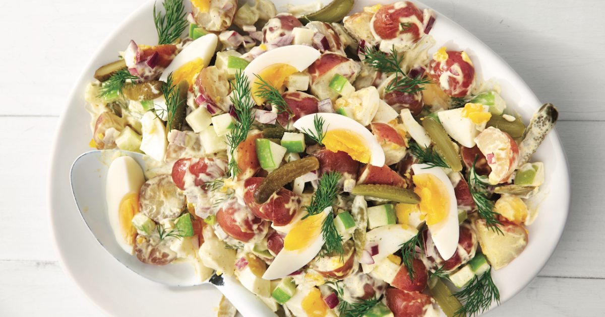
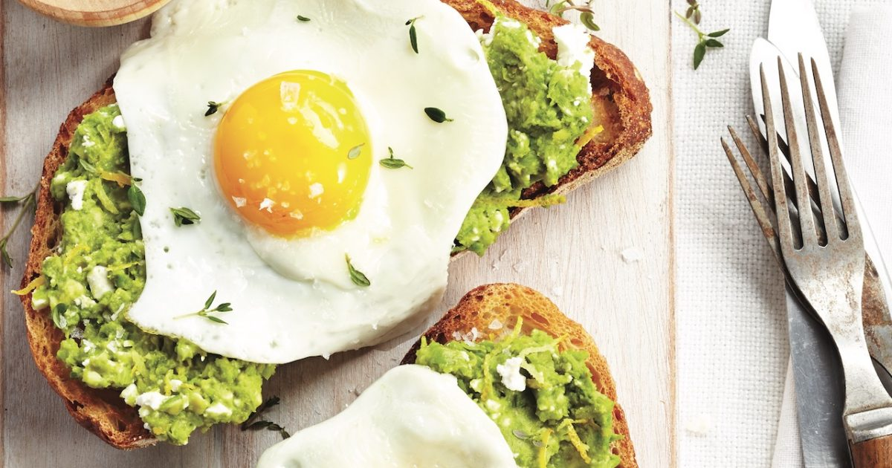

1 to 2 tablespoons (15 to 30 ml) fresh ginger, finely chopped
3 cloves garlic, finely chopped
4 teaspoons (20 ml) cornstarch
2 teaspoons (10 ml) paprika
2 teaspoons (10 ml) sambal oelek
1 teaspoon (5 ml) toasted sesame oil
1 cup (250 ml) sugar
3 tablespoons (45 ml) water
2 red bell peppers, cut into strips
3/4 cup (180 ml) canola oil
2 lbs (1 kg) chicken skinless and boneless thighs chicken, cut into large cubes
1/2 cup (125 ml) unbleached all-purpose flour
2 green onions, thinly sliced
Salt and pepper
Dans un bol, mélanger la sauce soya, le bouillon, le vinaigre, le gingembre, l’ail, la fécule, le paprika, le sambal oelek et l’huile de sésame. Réserver.
Dans une petite casserole, mélanger le sucre et l’eau. Porter à ébullition et laisser mijoter jusqu’à ce que le mélange caramélise légèrement, soit environ 5 minutes. Ajouter le mélange de soya. Porter de nouveau à ébullition en fouettant constamment. Réserver la sauce hors du feu.
Dans une grande poêle antiadhésive à feu moyen-élevé, attendrir les poivrons dans 30 ml (2 c. à soupe) de l’huile 3 minutes. Réserver sur une assiette.
Dans un bol, saler et poivrer le poulet. Ajouter la farine et mélanger jusqu’à ce qu’il soit bien enrobé. Retirer l’excédent de farine.
Dans la poêle qui a servi aux poivrons, dorer la moitié du poulet à la fois dans le reste de l’huile (150 ml/2/3 tasse) de manière à avoir un fond d’huile d’environ 1 cm (3/4 po). Ajouter de l’huile au besoin. Égoutter sur du papier absorbant et réserver au chaud. Jeter l’huile.
Dans la même poêle, réchauffer la sauce. Ajouter le poulet et les poivrons et bien les enrober de la sauce. Parsemer d’oignons verts. Servir avec du riz et des légumes sautés tel que du bok choy ou du chou chinois.
Salade Première

Temps de preparation: 20m
Temps de cuisson: 10m
Repas: déjeuner
Difficulté: moyenne
1/4 cup (60 ml) mayonnaise
1 tbsp (15 ml) whole-grain mustard
2 tsp (10 ml) white wine vinegar
1 tsp (5 ml) honey
1 lb (450 g) green beans, halved crosswise
3 small tomatoes, cut into wedges
2 cups (50 g) baby spinach
1/4 cup (30 g) toasted pecans, coarsely chopped
4 hard-boiled eggs, peeled and halved
1/4 cup (30 g) fresh Parmesan cheese shavings
In a small bowl, combine all the ingredients. Season with salt and pepper. Set aside in the refrigerator.
In a pot of salted boiling water, cook the beans for 5 minutes or until tender. Cool in an ice bath, then drain (see note).
In a large bowl, gently combine the beans, tomatoes, spinach, pecans and dressing. Adjust the seasoning. Serve the salad on plates and top with the eggs and cheese shavings.
Oeufs au plat et légumes

Temps de preparation: 25m
Temps de cuisson: 30m
Repas: dinner
Difficulté: difficile
180 g (1 tasse) de quinoa, rincé et égoutté
2 oignons rouges, émincés
2 poivrons de couleur, épépinés et coupés en cubes
1 courgette, coupée en dés
45 ml (3 c. à soupe) d’huile d’olive
4 œufs
60 ml (1/4 tasse) de sauce soya
45 ml (3 c. à soupe) de sirop d’érable
15 ml (1 c. à soupe) d’huile de sésame grillé
5 ml (1 c. à thé) de sauce Tabasco
Dans une casserole d’eau bouillante salée, cuire le quinoa jusqu’à ce qu’il soit tendre, soit environ 15 minutes. Égoutter.
Entre-temps, dans une grande poêle à feu moyen-élevé, dorer les légumes dans 30 ml (2 c. à soupe) de l’huile jusqu’à ce qu’ils soient tendres, soit environ 8 minutes. Réserver au chaud.
Dans une autre poêle antiadhésive à feu moyen-élevé, casser délicatement les œufs et les cuire dans le reste de l’huile, d’un côté seulement, de 2 à 3 minutes ou jusqu’à ce que le blanc soit cuit et le pourtour légèrement doré. Saler et poivrer.
Dans un bol, mélanger la sauce soya, le sirop d’érable, l’huile de sésame et la Tabasco.
Répartir le quinoa dans un plat de service et y placer les légumes. Garnir des œufs et napper de la sauce.